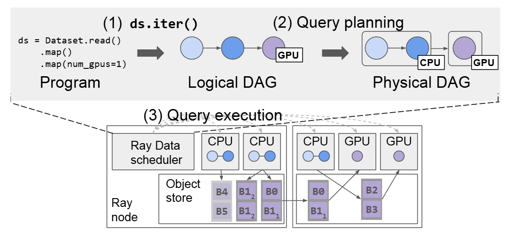
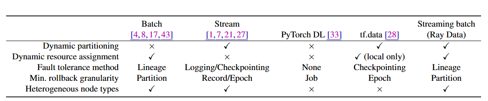
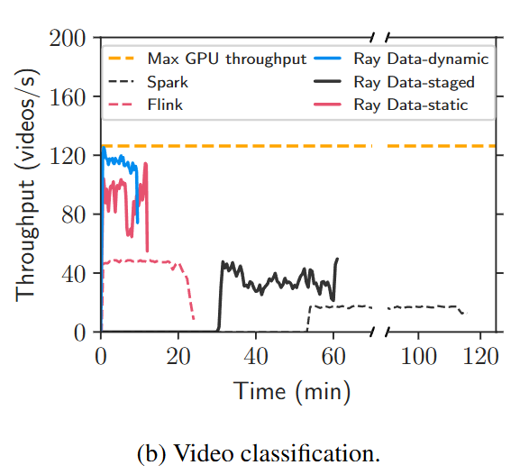
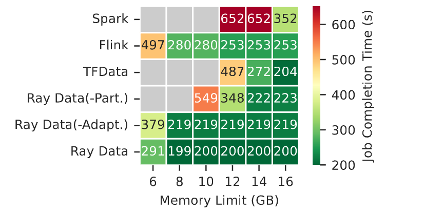

📌 摘要总结
机器学习训练与推理中，CPU 数据预处理常成为瓶颈。传统批处理系统（如 Spark）与流处理系统（如 Flink）无法同时实现异构资源高效利用与弹性容错。本文提出 Streaming Batch 模型，结合批处理的弹性分区与流处理的流水线执行，实现内存高效、资源弹性的异构数据流水线。系统 Ray Data 在异构推理流水线上比 Spark/Flink 快 2.5–12 倍，在 Stable Diffusion 训练中利用异构集群提升吞吐量 31%。
❓ 核心问题
唯一关键问题
如何设计一个能高效、容错地执行异构（CPU + GPU）数据流水线的分布式数据处理系统？
为什么现有方法不行？
- 批处理系统：静态分区、阶段执行 → 无流水线、内存占用大。
- 流处理系统：静态绑定资源 → 无法动态负载均衡、故障恢复代价高。
- ML 数据加载器：单节点、无分布式异构支持。
谁在乎？
- 系统领域：分布式计算、资源调度、容错。
- AI/ML 领域：大规模训练、多模态模型、LLM 推理。
- 工业界：云服务商、ML 平台、数据处理团队。
🏆 核心贡献（4C 模型）
Concept
Streaming Batch 模型：以分区为执行单位，支持弹性扩缩容；分区可动态创建、在异构算子间流式传输，实现内存高效流水线。
Challenge
解决异构资源高效利用、内存高效管理、弹性容错三大难题。
Construction
Ray Data 系统：基于 Ray，实现动态分区、中心化内存感知调度、分区级容错。
Claim
吞吐量比 Spark/Flink 高 2.5–12 倍；训练吞吐量比单节点加载器高 31%；支持动态资源分配与分区级容错。
⚙️ 方法原理解构
隐含假设
- 用户转换函数为纯函数（无副作用、确定性）。
- 中间数据可放入分布式对象存储（Ray Object Store）。
- 集群资源可被中心化调度器统一视图管理。
- 任务执行时间与数据大小可在线估计。
工作流程
图：Ray Data 架构概览（来自论文）
- 用户通过 Dataset API 定义流水线。
- 查询规划器编译为物理 DAG，进行算子融合与初始分区。
- 调度器循环：等待任务完成 → 将输出分区加入下游队列 → 选择可用资源与分区启动新任务。
- 任务执行时动态切分输出，控制分区大小（默认 128 MB）。
- 故障时基于 Lineage 重放丢失分区。
核心算法：自适应调度器（乐观策略）
budget = total_memory_capacity
while not all_done:
update_estimates() # 更新算子处理速率
if budget >= output_size(source_op):
launch_task(source_op)
budget -= output_size(source_op)
# 选择下游算子
qualified_ops = [op for op in DAG if has_input(op) and has_resources(op) and has_buffer_space(op)]
if qualified_ops:
selected = argmin(qualified_ops, buffered_output_size)
launch_task(selected)
该算法通过动态内存预算控制源头任务启动速率，平衡流水线各阶段处理速率，最大化资源利用率。
与相关工作对比
表：各系统在异构数据处理上的特性对比（来自论文）
📊 实验与结果
RAG 推理流水线

图：RAG 任务完成时间对比（Ray Data vs. 基线）
Ray Data 在 8 GPU 上实现 6.44 倍加速，且能自动平衡 CPU/GPU 瓶颈。
视频分类吞吐量
图：视频分类吞吐量对比（批处理 vs. 流处理 vs. Streaming Batch）
Ray Data 动态调度比 Flink 快 2.5 倍，比静态流处理快 1.25 倍。
内存感知流水线微基准测试
图：各系统在不同内存限制下的运行时间
Ray Data 在内存受限下仍接近最优性能，而 Spark 易 OOM，Flink 性能下降明显。
🎯 结论与启示
✅ 优点
- 高效异构流水线执行（CPU+GPU 流水线）
- 内存感知动态调度，避免 OOM
- 分区级容错，恢复开销低
- 支持动态扩缩容与异构节点
⚠️ 局限性
- 依赖 Ray 生态，非独立系统
- 纯函数假设（不适用非确定性转换）
- 中心化调度器可能成为单点瓶颈
- Python 实现可能在高并发下性能受限
🚀 未来工作
- 全自动查询规划与集群自动扩缩容
- 支持更复杂的有状态算子
- 多租户与优先级调度
- 更细粒度的数据局部性优化